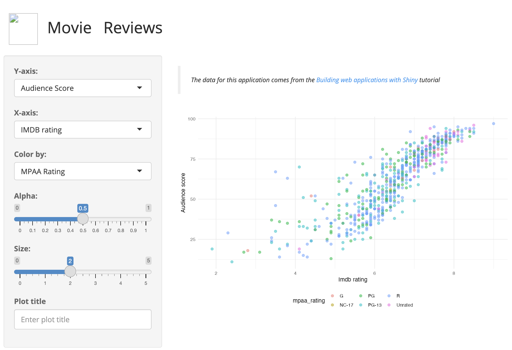
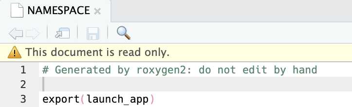
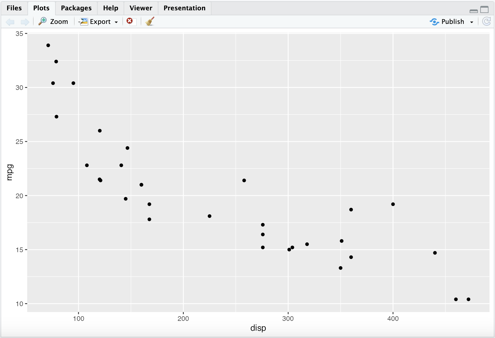
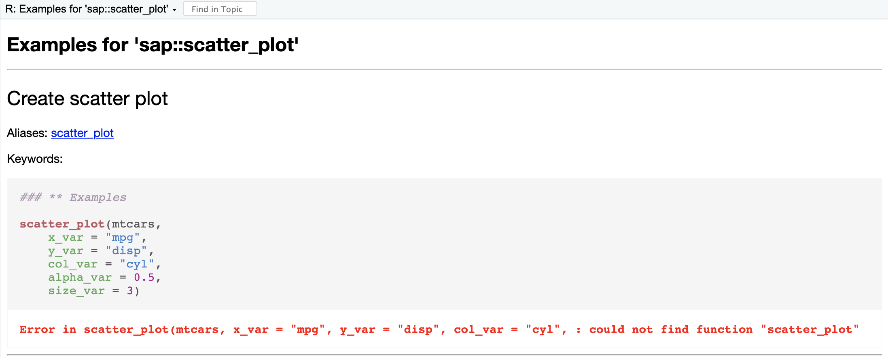
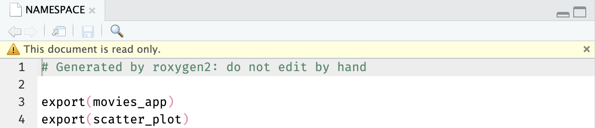
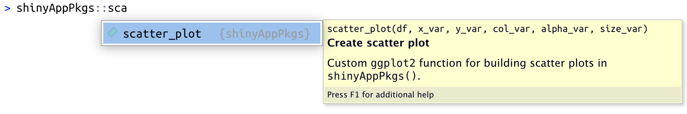
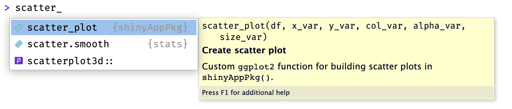
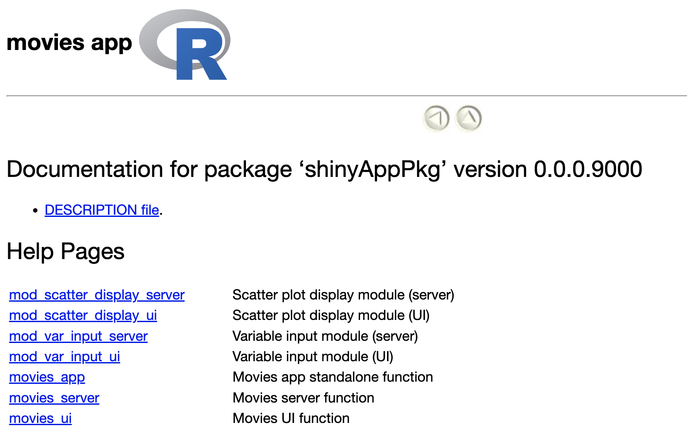

# install.packages('pak')
pak::pak('mjfrigaard/shinypak')6 Dependencies
The previous chapter showed how to document the functions with roxygen2. In this chapter we’ll cover how to manage dependencies in your new app-package.
Dependencies are the must-have components for your app-package, and they’re divided into imports and exports. Imports are the functions we’re borrowing from add-on packages (any packages not automatically loaded in a new R session), and exports are the functions, data, and other R objects our app-package offers to users.
Dependencies are handled using roxygen2 tags (to generate the NAMESPACE) and three fields in the DESCRIPTION file (Suggests, Imports, or Depends). If you’d like a refresher on documenting functions with roxygen2, a summary of the previous chapter is available below:
This chapter will pick up where we left off with the 05_roxygen2 branch of moviesApp.
Below is a folder tree of its contents:
moviesApp/
├── DESCRIPTION
├── NAMESPACE
├── R/
│ ├── mod_scatter_display.R
│ ├── mod_var_input.R
│ ├── movies_app.R
│ ├── movies_server.R
│ ├── movies_ui.R
│ └── utils.R
├── README.md
├── app.R
├── man/
│ ├── mod_scatter_display_server.Rd
│ ├── mod_scatter_display_ui.Rd
│ ├── mod_var_input_server.Rd
│ ├── mod_var_input_ui.Rd
│ ├── movies_app.Rd
│ ├── movies_server.Rd
│ ├── movies_ui.Rd
│ └── scatter_plot.Rd
├── movies.RData
├── moviesApp.Rproj
└── www/
└── shiny.png
4 directories, 21 files- 1
-
The
manfolder now contains the help (.Rd) files for the functions inR/
Chapter 4 recap: documenting functions with
roxygen2
Required @tags for all functions:
- Make sure all functions have a documented title & description (
@titleand@descriptiontags optional), function inputs and outputs (@paramand@return), and demonstrations of how the function works (@examples)
Shiny-specific documentation:
Use
@seealsoto link module UI and server functions, and@familyto link functions within a similar topic (i.e., ‘import data’ or ‘scatter plot’)Provide shiny-specific information (use within the app, reactive state, more details about the
@params, etc.) in@sectionblocks.
See the documentation chapter for more information
When in doubt…load, document, and install
During development, you might lose track of the last devtools function you called (I know I do). If this happens, I’ve found loading, documenting, and installing help re-orient me to the current state of the package.
Ctrl/Cmd + Shift + L
ℹ Loading moviesAppCtrl/Cmd + Shift + D
==> devtools::document(roclets = c('rd', 'collate', 'namespace'))
ℹ Updating moviesApp documentation
ℹ Loading moviesApp
Documentation completedCtrl/Cmd + Shift + B
==> R CMD INSTALL --preclean --no-multiarch --with-keep.source moviesApp
* installing to library ‘/path/to/local/install/moviesApp-090c61fc/R-4.2/x86_64-apple-darwin17.0’
* installing *source* package ‘moviesApp’ ...
** using staged installation
** R
** byte-compile and prepare package for lazy loading
** help
*** installing help indices
** building package indices
** testing if installed package can be loaded from temporary location
** testing if installed package can be loaded from final location
** testing if installed package keeps a record of temporary installation path
* DONE (moviesApp)
Restarting R session...
> library(moviesApp)It’s also satisfying to see all three functions execute without any errors!
Identifying dependencies
The first step in managing dependencies is identifying which add-on packages moviesApp relies on.1 Our goal is to limit the dependencies to only those critical to the functioning of our app, because each additional dependency is a potential point of failure (should this package become unavailable or significantly change).
In the last chapter, we moved and documented the standalone app function (movies_app()) in the R/ folder. The app.R file now only contains the following:
# pkgs <- c("shiny", "shinythemes", "stringr", "ggplot2", "rlang")
# install.packages(pkgs, quiet = TRUE)
# packages ------------------------------------
library(shiny)
library(shinythemes)
library(stringr)
library(ggplot2)
library(rlang)
# movies_app ------------------------------------
movies_app()Ideally, we’ll want to replace these calls to libary(), but first we have to make sure the functions we’re using in these packages will be available in moviesApp.
When we run the contents of app.R, we see the following:
> library(moviesApp)
> # pkgs <- c("shiny", "shinythemes", "stringr", "ggplot2", "rlang")
> # install.packages(pkgs, quiet = TRUE)
>
> # packages ------------------------------------
> library(shiny)
> library(shinythemes)
> library(stringr)
> library(ggplot2)
> library(rlang)
>
> # movies_app ------------------------------------
> movies_app()
Error in movies_app() : could not find function "movies_app"Why can’t R find the "movies_app" function in app.R?
Let’s recap what we’ve done so far:
app.R
app.Rloads the necessary packages and callsmovies_app()
moviesApp/
└── app.RR/
- The
R/movies_app.Rfile contains the code and documentation formovies_app()
moviesApp/
└── R/
└── movies_app.Rman/
roxygen2is generating theman/movies_app.Rdfile
moviesApp/
└── man/
└── movies_app.Rd6.1 Exports
The error above is telling us that despite having documentation for movies_app() in the R/ folder and generating the corresponding .Rd file in man/, movies_app() isn’t being exported from moviesApp.
The exact cause of the error above becomes more apparent when we try to explicitly namespace movies_app() from moviesApp:
moviesApp::movies_app()Error: 'movies_app' is not an exported object from 'namespace:moviesApp'Launch app with the shinypak package:
launch('06.1_pkg-exports')To make the movies_app() function available to users of our package, we need to export it. We export functions by including the @export tag in the roxygen2 comment block (above the function we want to export):
@export: The function name (my_func) is not required.#' @export my_func #' my_func <- function() { #' #' }- Read more here
6.1.1 Exporting movies_app()
Let’s start by exporting the movies_app() function from moviesApp by placing the @export tag above the function in R/movies_app.R:
#' Movies app standalone function
#'
#' Wrapper function for `shiny::shinyApp()`
#'
#' @return Shiny app
#'
#'
#' @seealso [mod_var_input_ui()], [mod_var_input_server()], [mod_scatter_display_ui()], [mod_scatter_display_server()]
#'
#' @export
#'
movies_app <- function() {
shiny::shinyApp(ui = movies_ui, server = movies_server)
}In app.R, we’ll replace the calls to library() with a single call to library(moviesApp)
# packages ------------------------------------
library(moviesApp)
# movies_app ------------------------------------
movies_app()We’ll load, document, and install the package to generate the NAMESPACE changes:
Ctrl/Cmd + Shift + L / D / B
Now, when we run the code app.R, we see the following:

movies_app()We’ve lost the Shiny icon (www/shiny.png) in the UI, but we’ll address this in the inst/ & www/ chapter.
movies_app() launches our application!
The NAMESPACE file now contains a single export (movies_app), and when we enter moviesApp:: in the Console, we see the movies_app() function help file in the tab completion.

NAMESPACE
moviesApp namespacemovies_app() is now part of the moviesApp namespace6.1.2 What @export does
We’ll pause here to notice a few things about what @export does. After loading, documenting, and installing moviesApp, the NAMESPACE is updated with export(movies_app), and the Console automatically calls library(moviesApp).
ls() returns “the names of the objects in the specified environment, so we can use it to confirm the movies_app() function is the only export from moviesApp:
ls(name = "package:moviesApp")[1] "movies_app"6.1.2.1 The search() list
library(moviesApp) attaches moviesApp to the search list. We can view all the attached packages in the string returned from search():
"package:moviesApp" %in% search()[1] TRUEWhat about the functions from add-on packages movies_app() relies on, like ggplot2?
Let’s check to see if ggplot2 is also attached to the search() list:
c("package:ggplot2") %in% search()[1] FALSEWhy does this matter? Because if these packages aren’t attached to the search() list, we can’t call their functions the way we would if we’d used library().
For example, if we try to use ggplot2 to build a plot (similar to the one we have in the app), we see the following:
ggplot(data = mtcars,
aes(x = disp, y = mpg)) +
geom_point()Error in ggplot(data = mtcars,
aes(x = disp, y = mpg)) :
could not find function "ggplot"If we want to use functions from the packages moviesApp relies on, we need to explicitly namespace these functions from their original package namespaces (i.e., pkg::fun()):
ggplot2::ggplot(data = mtcars,
ggplot2::aes(x = disp, y = mpg)) +
ggplot2::geom_point()
ggplot2 if we explicitly namespace it’s functions
Accessing add-on package functions
When a user loads moviesApp with library(moviesApp), any add-on package functions used in exports are available to users if they use pkg::fun() (or if they load the package themselves with library()).
Access to add-on package functions has implications for the other functions in moviesApp–for example, the scatter_plot() function uses ggplot2 functions. But we’re not exporting scatter_plot(), so when we attempt to run the examples, we see the following error:

scatter_plot()
scatter_plot() examplesscatter_plot() function without exportingExamples for ‘moviesApp::scatter_plot’
The message at the top of the Help pane is informative because it tells us that despite scatter_plot() being functional when we run movies_app(), it’s not part of the package namespace (and thus, not accessible to users in the help file).
6.1.2.2 Exporting scatter_plot()
Let’s add the @export tag to R/scatter_plot.R so it’s exported from moviesApp.
#' Create scatter plot
#'
#' Custom [`ggplot2`](https://ggplot2.tidyverse.org/) function for building scatter plots in `moviesApp()`.
#'
#'
#' @param df `data.frame` or `tibble`
#' @param x_var string variable mapped to `x` axis
#' @param y_var string variable mapped to `y` axis
#' @param col_var string variable mapped to `color`
#' @param alpha_var number for point `alpha`
#' @param size_var number for point `size`
#'
#' @return A `ggplot2` plot object
#'
#'
#' @examples
#' scatter_plot(mtcars,
#' x_var = "mpg",
#' y_var = "disp",
#' col_var = "cyl",
#' alpha_var = 0.5,
#' size_var = 3)
#'
#' @seealso [mod_scatter_display_server()]
#'
#' @export
#' After loading, documenting, and installing moviesApp, the NAMESPACE is updated with the export() directive:
Ctrl/Cmd + Shift + L / D / B
The contents of the updated NAMESPACE file are below (and moviesApp:: in the Console now displays the scatter_plot() help file in the tab completion):

@export the scatter_plot function
moviesApp::scatter_plot()scatter_plot() is now part of the moviesApp namespaceBelow, we confirm users can access the help file for scatter_plot() and run the examples:

scatter_plot() examples?scatter_plot6.1.2.3 loadedNamespaces()
We’ve already confirmed that ggplot2 isn’t attached with moviesApp (and hence, it is not included in the search() list)
c("package:ggplot2") %in% search()[1] FALSEHowever, we can access the functions we used the pkg::fun() syntax with because those functions are included in the loaded namespaces (which we can view with loadedNamespaces())
c("ggplot2") %in% loadedNamespaces()[1] TRUE
Accessing non-exported functions
What about functions that aren’t exported from moviesApp?
Functions that are not exported (i.e., do not include the @export tag) are still accessible after installing and loading a package using the pkg:::fun()
6.1.3 What to @export
‘Always err on the side of caution, and simplicity. It’s easier to give people more functionality than it is to take away stuff they’re used to’ - What to export, R Packages, 2ed
When determining which functions to export, consider the question: “When a user installs and loads moviesApp, what functions do I want to be available?”
In app-packages, I take the following general approach:
Start by exporting only the standalone app function (
movies_app())Selectively export modules and/or functions that perform distinct tasks with potentially reusable functionality (i.e., generate specific UI components, perform data processing tasks, etc.).
You’ll rarely want to export everything, but it might be helpful if the primary audience for your app-package is other developers within your organization. See the Low-key @exports with @keywords internal box below for exporting functions without including them in your package index.
Low-key
@exports with @keywords internal
If you’d like function to be exported, but not listed in the package index, you can combine @export with @keywords internal. These should be used in combination,
#' @export
#'
#' @keywords internalFor example, adding @export and @keywords internal to R/scatter_plot.R will make the function accessible to users:

And include the help file:

However, if a user were to click on the Index for moviesApp (at the bottom of the help file)

scatter_plot is not listed:

6.2 Imports
Launch app with the shinypak package:
launch('06.2_pkg-imports')Managing imports is slightly more involved than exports because imported dependencies can live in DESCRIPTION and the NAMESPACE:
The
DESCRIPTIONfile handles package-level dependencies, specifying which add-on packages our app-package uses.The
NAMESPACEmanages function-level access, importing functions from add-on packages to be used in our app-package, and–as we’ve seen above–exporting functions from our app-package for others to use.
6.2.1 Package-level depencencies
The DESCRIPTION file manages dependencies with three fields: Depends, Imports, and Suggests. 2
6.2.1.1 Depends
Packages listed under Depends are essential for our app-package to work. These packages will be attached before our package when library(moviesApp) is called.
6.2.1.2 Imports
Packages listed under Imports are necessary for our app-package to work. These packages are loaded (but not attached) when our app-package is installed.
- Most add-on packages belong under the
Importsfield (i.e., functions from these packages are used in the code belowR/).
6.2.1.3 Suggests
The Suggests field should include any packages that enhance our app-package, but aren’t necessary for the basic functionality. This might include packages used in examples, vignettes, tests, etc.
6.2.2 Function-level access
Function-level access is managed using namespace-qualified references (or ‘explicit namespacing’) in the code below R/. The NAMESPACE can also be used to include add-on packages or functions with the @import and @importFrom tags.3
6.2.2.1 pkg::fun()
Refer to add-on package functions using pkg::fun() syntax in the code below R/.
6.2.2.2 @importFrom
@importFrom should be used when 1) “You can’t call an operator from another package via ::” 2) “importing a function makes your code much more readable” (not easier to write)
6.2.2.3 @import
@import should be used if “you make such heavy use of so many functions from another package that you want to import its entire namespace”
6.2.3 Imports in moviesApp
The workflow I use to manage add-on dependencies comes from the advice in the roxygen2 documentation.4
Include the add-on package to the
Importsfield withusethis::use_package()Refer to add-on functions using explicit namespacing (i.e.,
pkg::fun()) in the code beneathR/
We have some special considerations for the imports in moviesApp:
- A substantial portion of the code in
moviesAppcomes fromshiny, so we’ll remove the explicit namespacing and place the@importtag inR/movies_app.R5
#' Movies app standalone function
#'
#' Wrapper function for `shinyApp()`
#'
#' @return Shiny app
#'
#'
#' @seealso [mod_var_input_ui()], [mod_var_input_server()], [mod_scatter_display_ui()], [mod_scatter_display_server()]
#'
#' @import shiny
#'
#' @export
#' - 1
- Import entire shiny package namespace
.datacan’t be exported using::, so we’ll include@importFromfor the use of.datainR/scatter_plot.RThe
ggplot2package has over 400 functions, so we don’t want to import the entire package with@import. Adding the package to the Imports field and using namespace-qualified references.6
#' Create scatter plot
#'
#' Custom [`ggplot2`](https://ggplot2.tidyverse.org/) function for building scatter plots in `moviesApp()`.
#'
#'
#' @param df `data.frame` or `tibble`
#' @param x_var string variable mapped to `x` axis
#' @param y_var string variable mapped to `y` axis
#' @param col_var string variable mapped to `color`
#' @param alpha_var number for point `alpha`
#' @param size_var number for point `size`
#'
#' @return A `ggplot2` plot object
#'
#'
#' @examples
#' scatter_plot(mtcars,
#' x_var = "mpg",
#' y_var = "disp",
#' col_var = "cyl",
#' alpha_var = 0.5,
#' size_var = 3)
#'
#' @seealso [mod_scatter_display_server()]
#'
#' @importFrom rlang .data
#'
#' @export
#' - 1
-
Import a the
.dataoperator fromrlang
After adding all add-on packages to the DESCRIPTION with usethis::use_package(), then deciding if/where to use @importFrom and @import, we’ll load, document, and install moviesApp:
Ctrl/Cmd + Shift + L / D / B
When we review the updated NAMESPACE and DESCRIPTION files, we should see the following:

NAMESPACE with @import and @importFrom
DESCRIPTION with all Importsroxygen2 will update the NAMESPACE, but usethis::use_package() is needed to update the DESCRIPTIONWhen we run movies_app(), we see the application launches and we can still run the scatter_plot() examples:
movies_app() works
?scatter_plotmoviesApp6.2.4 What happened in moviesApp?
The figure below attempts to capture some of confusion between the dependencies listed in the NAMESPACE and the Imports field in the DESCRIPTION file.7

roxygen2 does not connect the NAMESPACE to the DESCRIPTIONdevtools::document() (or Ctrl/Cmd + Shift + D) updates the NAMESPACE with any @import, @importFrom or @export tags. However, no changes are made to the DESCRIPTION file.Let’s confirm we’re still only exporting movies_app() and scatter_plot() from moviesApp:
ls(name = "package:moviesApp")[1] "movies_app" "scatter_plot"Great. Now we’ve listed five packages in the Imports field of the DESCRIPTION file:
Imports:
ggplot2,
rlang,
shiny,
shinythemes,
stringr6.2.4.1 The search() list
Are these packages on the search list?
pkgs <- c("package:ggplot2", "package:rlang",
"package:shiny", "package:shinythemes",
"package:stringr")
pkgs %in% search()[1] FALSE FALSE FALSE FALSE FALSEThis demonstrates that none of these packages are attached with moviesApp. However, the rlang and shiny packages are included in the loadedNamespaces() (because we included them with @import/@importFrom).
pkgs <- c("ggplot2", "rlang", "shiny",
"shinythemes", "stringr")
pkgs %in% loadedNamespaces()[1] FALSE TRUE TRUE FALSE FALSEWe can still access the add-on package functions in moviesApp using the pkg::fun() syntax:
ggplot2::ggplot(data = mtcars,
ggplot2::aes(x = disp, y = mpg)) +
ggplot2::geom_point()ggplot2 functions are still available if we explicitly namespace6.3 More information on imports
I’ve provided a handful of useful tips on package imports below:
How can I include an add-on package to my DESCRIPTION file?
usethis::use_package()automatically adds a package in theImportssection, and has options for specifying the minimum version
Will users of my app-package have access to the packages listed in the Imports field of my DESCRIPTION file?
library(moviesApp)loads the namespace of imported packages, but they are not attached to thesearch()path8
How can I tell the difference between functions written by a package author and imported functions in the code below R/?
- Using
pkg::fun()makes calls to add-on packages explicit and easy to differentiate from the native functions developed inmoviesApp9
What does the NAMESPACE do when my package is installed by a user?
- Managing the
NAMESPACEensures your app-package works when it’s installed and loaded on another machine, because R will read your package namespace to find what it imports and exports10
Where should I place the @importFrom tag in the code below R/?
Place the
@importFrom pkg funtag directly above the code using the add-on function.You can also consolidate all
@importand@importFromtags into a single package doc file (i.e.,R/[moviesApp]-package.R) by callingusethis::use_package_doc().
Should I be using @importFrom or @import from?
Where can I find more information about package namespaces and imports?
- Imports are described briefly in R Packages, 2ed13 and covered in-depth in Advanced R, 2ed14
- “Each namespace has an imports environment that can contain bindings to functions used by the package that are defined in another package.”
- “The imports environment is controlled by the package developer with the
NAMESPACEfile. Specifically, directives such asimportFrom()andimports()populate this environment”
- “Each namespace has an imports environment that can contain bindings to functions used by the package that are defined in another package.”
In order for app-package to work, users needs to have access to any add-on packages that are called in the code below R/. Knowing when, why, how and what happens to imports helps you decide how to fit these habits into your package development workflow.
6.4 Checking dependencies
With all the moving parts in dependency management, it can be easy to forget if you’ve documented everything correctly. So far we haven’t covered using devtools::check() as part of your app-package habits (which is fine), but this is one area it’s particularly helpful.
For example, if I had listed shiny as an import using the @import tag (resulting in the import(shiny) directive in the NAMESPACE), devtools::check() would produce the following error:
── R CMD check results ────────────────────────── moviesApp 0.0.0.9000 ────
Duration: 7.4s
❯ checking package dependencies ... ERROR
Namespace dependency missing from DESCRIPTION Imports/Depends entries: ‘shiny’
See section ‘The DESCRIPTION file’ in the ‘Writing R Extensions’
manual.
1 error ✖ | 0 warnings ✔ | 0 notes ✔
Error: R CMD check found ERRORs
Execution halted
Exited with status 1.6.5 Recap
Below are the main takeaways from managing the imports and exports from your app-package:
Dependencies recap
This chapter covered:
Exports: Aim for a balance between simplicity and utility when deciding which functions to export (i.e., what functions should be available to users who install your package). Export objects from using
@exportImports: Use
pkg::fun()syntax when you use add-on package functions and include them in theImportsfield of theDESCRIPTIONfile. App-packages use so manyshinyfunctions it makes sense to include@import shinyto 1) ensure all of these functions are available, and 2) you won’t need to usepkg::fun().DESCRIPTIONImportsThis field lists the packages your app-package uses. All add-on packages used in theR/folder must be listed in theImportsfield. These functions can be called using thepkg::fun()syntax (or with@importFrom()). Functions from these packages will be available for your package, but not for the user unless they use the::operator or load the package themselves withlibrary().NAMESPACEimports: The@import/@importFromtags make the functions from add-on packages available to your package. Favor using@importFromover@importfor add-on package functions (the only exception beingshiny, which you’d want to use@import).
The Imports field in the DESCRIPTION handles package-level dependencies (and it is managed manually or with usethis::use_package()), while the NAMESPACE handles function-level access (with @export and @import/@importFrom).
If you’d like to read more about package dependencies, I recommend Writing R Extensions (specifically the sections on dependencies 15 and namespaces 16).
In the next section, we’ll cover how the ensure the app.R file runs our application!
I’ve made this process somewhat easier by explicitly namespacing all of the add-on package functions in
moviesApp(i.e., withpkg::fun()).↩︎Additional fields exists (i.e.,
Remotes), but these are special circumstances.↩︎Read more about this in the section titled, ‘In code below R/’ in R Packages, 2ed↩︎
“if you are using just a few functions from another package, we recommending adding the package to the
Imports:field of theDESCRIPTIONfile and calling the functions explicitly using::, e.g.,pkg::fun()”…“If the repetition of the package name becomes annoying you can@importFromand drop thepkg::fun()”. Read more in the Importing functions section on the package website:↩︎Using
@importis not generally considered best practice, but it makes sense for app-packages: …for Shiny apps, I recommend using@import shinyto make all the functions in the Shiny package easily available. Mastering Shiny, R CMD check”↩︎Read more about using
ggplot2in packages in the section titled, ‘Referring toggplot2functions’↩︎See the section titled, ‘Confusion about Imports’ in R Packages, 2ed, “Listing a package in
ImportsinDESCRIPTIONdoes not ‘import’ that package.”↩︎Users can access functions from add-on packages with the
pkg::funsyntax↩︎“Our recommended default is to call external functions using the
package::function()syntax” - R Packages, 2ed↩︎The namespace controls the search strategy for variables used by functions in the package. If not found locally, R searches the package namespace first, then the imports, then the base namespace and then the normal search path (so the base namespace precedes the normal search rather than being at the end of it). - Writing R Extensions↩︎
“Using
importFromselectively rather thanImportsis good practice and recommended notably when importing from packages with more than a dozen exports and especially from those written by others (so what they export can change in future).” - Specifying imports and exports.↩︎“Specifically, we recommend that you default to not importing anything from [add-on packages] into your namespace. This makes it very easy to identify which functions live outside of your package, which is especially useful when you read your code in the future. This also eliminates any concerns about name conflicts between [add-on packages] and your package.” - R Packages, 2ed↩︎
See the Function lookup inside a package section of R Packages, 2ed↩︎
See the Package environments and the search path of Advanced R, 2ed↩︎
See section 1.1.3 Package Dependencies in Writing R Extensions↩︎
See section 1.5, Package namespaces in Writing R Extensions↩︎